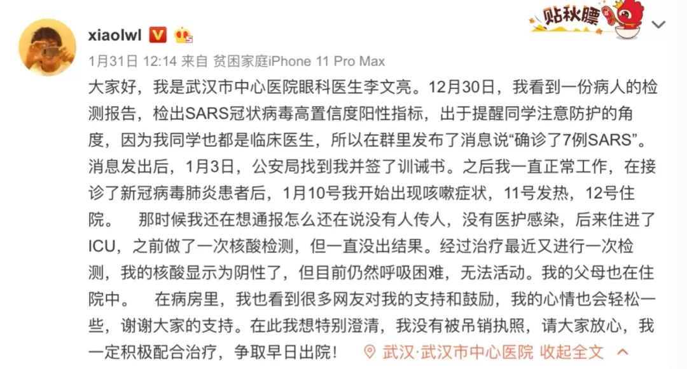
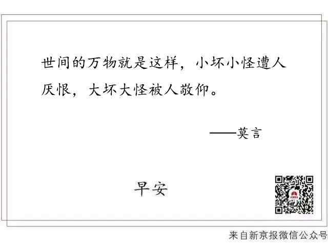

武汉兴建方舱医院、各大城市防控越发严格，以及 30 条疫情新闻
原文链接 备份链接 疫情发展 根据丁香医生实时数据，截至 2020 年 2 月 4 日 18 时，全国累计确诊病例 20520 例，疑似病例 23214 例。较昨日，新增确诊病例 3284 例，新增疑似病例 5027 例。其中， …

在接受媒体采访时，被问及康复后有什么计划，李文亮说：“恢复以后还是要上一线，疫情还在扩散，不想当逃兵！至于疫情以后的事，还没想太多。”
全文2071字，阅读约需4分钟
2月7日凌晨，武汉中心医院官方微博发布消息：我院眼科医生李文亮，在抗击新型冠状病毒感染的肺炎疫情工作中不幸感染，经全力抢救无效，于2020年2月7日凌晨2点58分去世，对此我们深表痛惜和哀悼。

7日，武汉卫健委在其官网发布公告：武汉市中心医院眼科医生李文亮在抗击新型冠状病毒感染的肺炎疫情中不幸感染，因病情恶化，经抢救无效，于2020年2月7日凌晨2点58分去世。我委特向李文亮医生表示沉痛哀悼并向其家属表示深切慰问！

2019年12月30日下午，李文亮在同学群里提到，“华南水果海鲜市场确诊了7例SARS”“最新消息是冠状病毒感染确定了，正在进行病毒分型”。2020年1月1日，武汉警方发布通报称，一些网民在不经核实的情况下，在网上发布、转发不实信息，造成不良社会影响。公安机关经调查核实，传唤8名违法人员，并依法进行了处理。两天后，李文亮收到警方的训诫书，警方认定“华南水果海鲜市场确诊了7例SARS”的言论，不属实。
1月12日，李文亮因发烧、咳嗽在武汉中心医院呼吸与重症医学科监护室接受隔离治疗。2020年2月1日，李文亮确诊新型冠状病毒肺炎。他发表微博称，“今天核酸检测结果阳性，尘埃落定，终于确诊了”。

━━━━━
接诊82岁眼疾患者后咳嗽发烧
据李文亮自述，他是在接诊新冠病毒肺炎患者后，1月10号开始出现咳嗽症状，11号发热，12号住院。“那时候我还在想通报怎么还在说没有人传人，没有医护感染。”
在接受媒体采访时，李文亮介绍了自己感染肺炎的经过：
“1月8日，我接诊了一位82岁的女性患者，她就诊的疾病是急性闭角型青光眼。我们平时接触患者也没有做特殊防护，病人来的时候也没发热，我就大意了。
不过，第二天也就是9号，她就发烧了。等她CT做完，我就高度怀疑她是病毒性肺炎。因为CT显示，她的症状是“双肺磨玻璃样病变”，这是病毒性肺炎的表现。而且，已经排除了常见病毒感染，支原体、衣原体感染等情况。不过，因为医院还没有用于检测确诊病人的试剂盒，当时并没有给她确诊。
她1月8号住院，我1月10号就出现了咳嗽症状。随后我的病情也发展出现严重症状，并住进了重症监护室。”
1月24日起，李文亮就一直在武汉市中心医院呼吸内科重症监护室接受治疗。“经过治疗最近又进行一次检测，我的核酸显示为阴性了，但目前仍然呼吸困难，无法活动。我的父母也在住院中。”李文亮1月31日在微博上说。
李文亮说，在病房里，他也看到很多网友支持和鼓励，心情会轻松一些，谢谢大家的支持。“在此我想特别澄清，我没有被吊销执照，请大家放心，我一定积极配合治疗，争取早日出院。”
2月1日，李文亮通过微博透露，其核酸检测结果阳性，“尘埃落定，终于确诊了。”
在接受媒体采访时，被问及康复后有什么计划，李文亮说：“恢复以后还是要上一线，疫情还在扩散，不想当逃兵！至于疫情以后的事，还没想太多。”
━━━━━
曾因发布武汉疫情相关信息被武汉公安部门训诫
李文亮在微博上回忆，12月30日，他看到一份病人的检测报告，检出SARS冠状病毒高置信度阳性指标。因为他的同学也都是临床医生，出于提醒同学注意防护的角度，他在群里发布了消息说“确诊了7例SARS”。消息发出后，1月3日，公安局找到李文亮并签了训诫书。之后其一直正常工作。

据媒体报道，当时有3个医学交流群发布了相关的消息。疫情初期，这些信息尚未引起足够的重视。1月1日，武汉警方发布通告：一些网民在不经核实的情况下，在网络上发布、转发不实信息，造成不良社会影响。公安机关经调查核实，已传唤8名违法人员，并依法进行处理。
1月28日，最高人民法院刊文对“8人传谣被处理”事件评论称：“如果机械地理解适用法律，我们的确可以认定，鉴于新型肺炎不是SARS，说武汉出现了SARS，属于编造不实信息，且该信息造成了社会秩序的混乱，符合法律规定的编造并传播虚假信息的行为，给予其训诫或行政处罚甚至刑事处罚。”
“但是，事实证明，尽管新型肺炎并不是SARS，但是信息发布者发布的内容，并非完全捏造。如果社会公众当时听信了这个‘谣言’，并且基于对SARS的恐慌而采取了佩戴口罩、严格消毒、避免再去野生动物市场等措施，这对我们今天更好地防控新型肺炎，可能是一件幸事。”
“只要信息基本属实，发布者、传播者主观上并无恶意，行为客观上并未造成严重的危害，我们对这样的‘虚假信息’理应保持宽容态度。”
最高法表态1天后，1月29日武汉警方发布通报：2019年12月31日，武汉市卫健部门发布关于肺炎疫情的情况通报。随后，多名网民举报有人在网上传发不实信息。为查明情况，公安机关先后对8名行为人进行了调查、核实。根据调查情况，8人分别传发了“X医院已有多例SARS确诊病例”、“确诊了7例SARS”、“Y医院接收了一家三口从某洲回来的，然后就疑似非典了”等未经核实的信息。根据《中华人民共和国治安管理处罚法》的相关规定，因上述8人情节特别轻微，当时，公安机关分别进行了教育、批评，均未给予警告、罚款、拘留的处罚。
新京报记者 许雯 吴娇颖 编辑 小豆丁
点击下图进入”全国新型冠状病毒感染肺炎实时地图“

*值班编辑 李二号 花木南*


本文部分首发自新京报公号“北京知道”
未经新京报书面授权不得转载使用
欢迎朋友圈分享



原文链接 备份链接 疫情发展 根据丁香医生实时数据，截至 2020 年 2 月 4 日 18 时，全国累计确诊病例 20520 例，疑似病例 23214 例。较昨日，新增确诊病例 3284 例，新增疑似病例 5027 例。其中， …
原文链接 备份链接 17 年前的那场公共卫生危机，未能及时公开疫情成为事后被诟病最多的问题之一，也成为中国疾病防控系统以及政府信息公开等许多方面的重要转折点。 而多年后，越来越多的互联网官方渠道成为了重大事件的定海神针，「官宣」被普遍接 …
原文链接 备份链接 【财新网】（驻香港记者 王端）武汉新型冠状病毒肺炎患者有急剧增加趋势。 1月20日凌晨，武汉卫健委方面更新的数据显示，1月18日和19日两日共新增136名确诊患者。其中，18日增59人，19日增77人。武汉患者共198 …
原文链接 备份链接 武汉卫健委最新通报，“不明原因肺炎”已排除SARS和MERS，但病原体仍未明确。 武汉患者已增至59例，重症7例，均在接受隔离治疗，无死亡病例。 香港特区等地加强了对来自武汉人员的监测，香港每日公布疑似案例，最新 …
原文链接 备份链接 疫情发展 根据丁香医生实时数据，截至 2020 年 2 月 6 日 18 时，全国累计确诊病例 28129 例，疑似病例 24702 例，新增确诊病例 3766 例，新增疑似病例 5328 例。其中，重症病例 3859 …